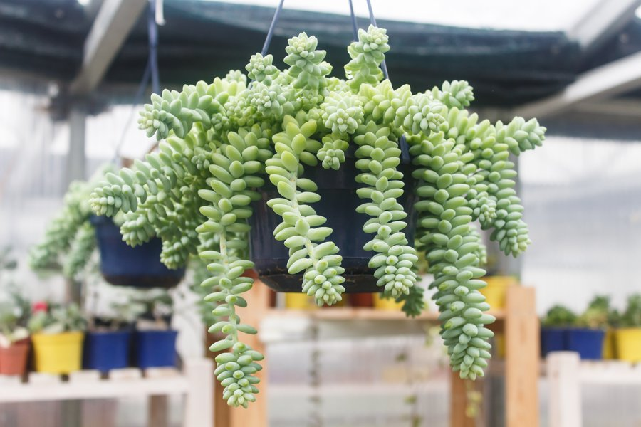
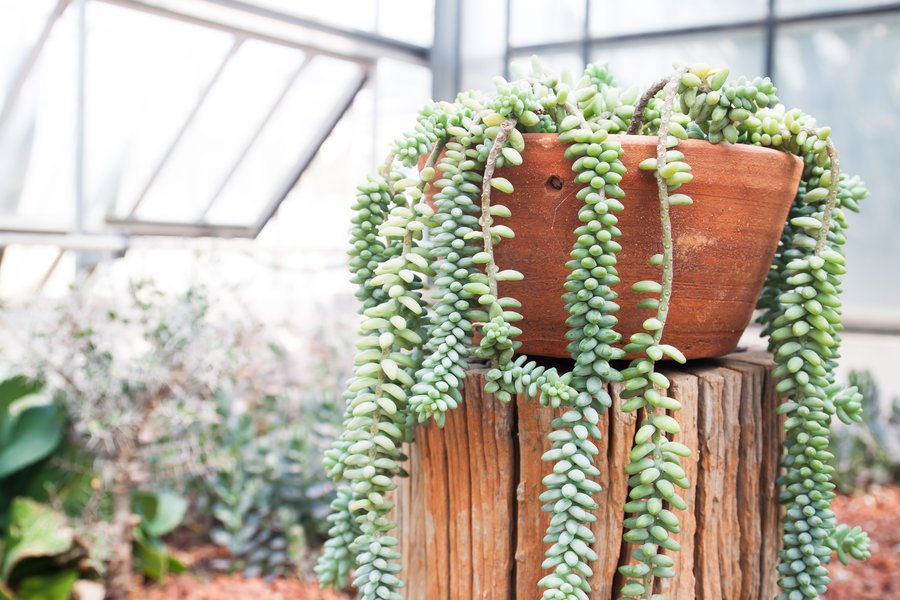
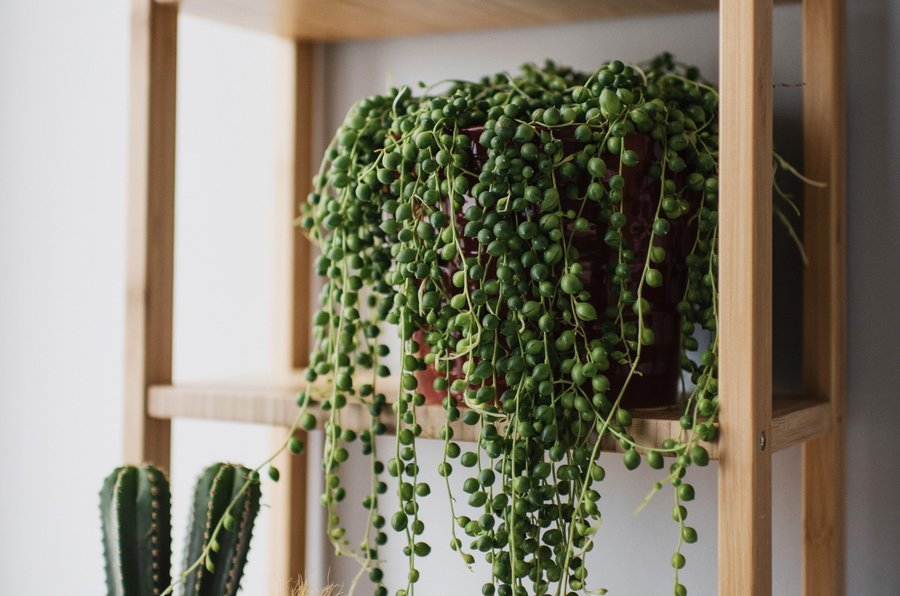

סביון הכדורים
String of Pearls
שמש
אור בהיר
עם שמש ישירה
עם שמש ישירה
מים
להשקות כל
2-3 שבועות
2-3 שבועות
צמח חוץ
לשמור על טמפ'
של 18 - 24°C
של 18 - 24°C
סביון הכדורים (Curio rowleyanus / Senecio rowleyanus) הוא צמח בשרני ממשפחת האסטרים, מקורו בדרום מערב אפריקה. גבעוליו דקים ומשתלשלים, ועליהם עגלגלים ובשרניים בצורת חרוזים - מתאים במיוחד לגידול תלוי.
אופן הטיפולדורש אדמה מנוקזת היטב (תערובת לסוקולנטים) ומיקום מואר. יש להשקות רק כשהאדמה יבשה לגמרי ולהימנע לחלוטין מהשקיית יתר, שגורמת לריקבון ה"חרוזים". דישון קל אחת לחודשיים בעונת הצמיחה. מומלץ לתת לאדמה להתייבש לגמרי בין השקיות.
אבחון הבעיה- בחר תסמין
- “חרוזים” רכים ושקופים שנושרים
- “חרוזים” מקומטים
- גבעולים דלילים עם מרווחים גדולים בין החרוזים
- חרוזים לבנים/שרוטים
- אחר